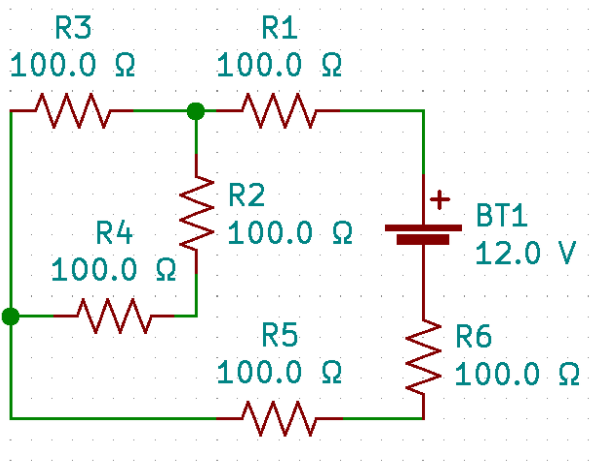
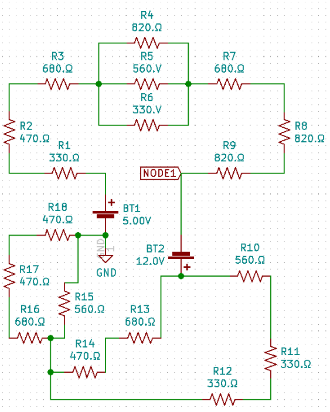
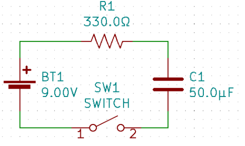
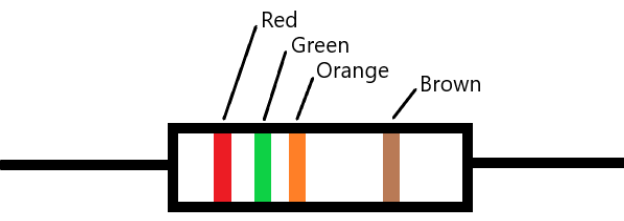
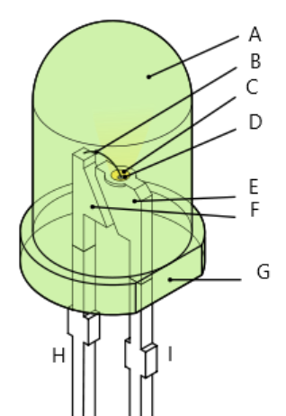
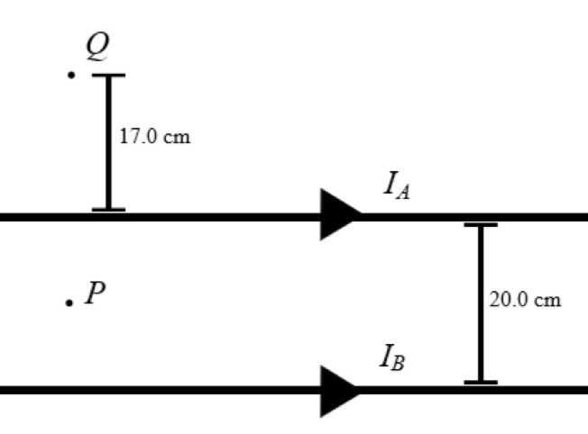
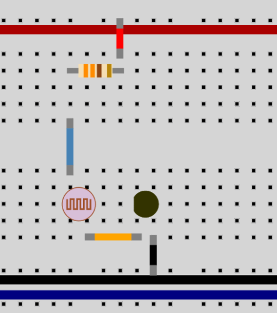
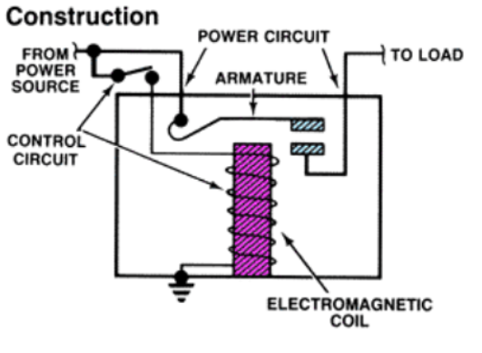
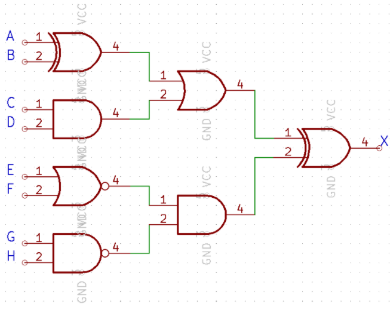

Circuit Lab Tryouts
South Brunswick High School Science Olympiad 2020-2021
Directions
- Show all work. Partial credit is available.
- Use appropriate significant figures. 10% of the question’s point value will be deducted if there are two or more incorrect significant figures in the final answer.
- The direction of current is Conventional Current, the direction in which positive charges flow
- Assume that all batteries, wires, and meters are ideal unless otherwise stated
- Assume gravitational effects are negligible unless otherwise stated
- Tiebreakers will be marked using two asterisks (**) next to the question’s point value. They are ranked in the order in which they appear.
- There are two Google forms. For the first one, input your final numerical answers. If the question is purely text based, you can type your response there as well. Show your work on a separate sheet of paper and upload that to the second Google form within 5 minutes after the test ends. If you choose to write text-based questions by hand, please indicate that on the first Google form under the input field for that question.
Continue
-
Consider the Following circuit:

- Find the equivalent resistance of the circuit. [1 pt]
- What is the voltage drop across R2? [1 pt]
- What is the current through R3? [1 pt]
- How many Joules of heat are dissipated by R6 over 10 minutes? [2 pts**]
-
Consider the Following circuit:

- Find the current through R15. [2 pts]
- Find the voltage drop across R5. [2 pts]
- What is the equivalent resistance of R4, R5, and R6? [1 pt]
- Find the voltage at node 1. [2 pts]
- What sign (+ or -) is the voltage at node 1? What does this mean? [2 pts]
-
Consider the Following circuit:

- What is the time constant of this circuit? [1 pts]
-
Suppose the switch is closed.
- After how much time is the capacitor 75% charged? [2 pts**]
- After how much time would the capacitor be considered “fully charged”? [2 pts]
-
What is the difference between AC and DC? Which is more physiologically dangerous? Explain. [3 pts]
-
What is the value and tolerance of the resistor below? [1 pts]

-
Label the following LED: [0.25 pts each]

-
In a popular physics demonstration, a strong neodymium magnet is dropped through a long aluminum tube. The magnet falls slowly, as if it is moving through honey. Explain this phenomenon and the law that causes it. [4 pts**]
-
An electron moving at 4550 m/s westwards enters a 2.00T magnetic field (into the page).
- Determine the magnitude and direction of the magnetic force it experiences at the instant it enters the field. [2 pts]
- What is the radius of the electron’s path? [2 pts]
-
Consider two infinitely long wires as shown, which have currents IA=241mA andIB=325mA. Point P is halfway between the wires.

- Determine the magnitude and direction of the net magnetic field at points P and Q. [2 pts]
- Determine the magnitude and direction of the force per meter the wires experience. [2 pts]
-
Magnetos, or “mags” are electrical devices found on piston aircraft engines such as the Piper J-3 Cub. The Cub is equipped with two mags, left and right. In the magneto, the engine’s rotational motion is mechanically coupled with a rotor connected to a magnet, which spins within loops of copper wire. Each magneto supplies voltage to power one of two spark plugs per engine cylinder, of which there are four. The piper cub did not originally have an electrical system. The spark plugs use a high voltage to create a spark which ignites a fuel-air mixture in the engine cylinder.
- Name and explain the principle that this device relies on to create electrical energy from rotational kinetic energy. [2 pts]
- The Piper Cub needs to be hand-propped - that is, a person must stand in front of the airplane and physically spin the propellor. Explain why this needs to happen. It may be helpful to know that the engine crankshaft on piston airplanes is directly connected to the propellor. [2 pts]
- Automobiles are equipped with a battery and alternator. Alternators work similarly in principle to magnetos, but they supply electrical energy to the battery and not the spark plugs directly. When you start a car, you don’t need to open the hood every time and spin the crankshaft yourself. (Frankly, that’d be quite ridiculous). Cars are generally not equipped with magnetos. Given the information in this problem, infer why cars can start with the turn of a key and the Piper Cub needs to be hand-propped. [3 pts]
- In your opinion, which is the better system? Defend your response. You will not lose points based on which side you take. Consider the context in which each system is used, and the safety requirements that each might have. For example, think about what would happen if the engine failed in an airplane versus a car. [3 pts]
-
Two point charges are placed 0.420 m away from each other, q1andq2, with values +4.3 µC and -5 µC respectively.
- Determine the electrostatic force they experience. [1 pt]
- Determine the net electric field at the point halfway between the two charges. [1 pt]
-
A square loop of wire of side length 0.300m enters a magnetic field of 0.0500T. The field is pointing out of the page and the loop is moving at 0.250m/s to the west.
- Determine the motional emf generated in the loop. [2 pts]
- What direction is the current in the loop? [1 pt]
-
Brad makes the circuit below on a breadboard. The voltage in the positive power bus is 5V and the negative power bus is at 0V. The black circle is a yellow LED.

- The LED in the circuit is not lighting up. What mistake did Brad make when he built the circuit? [1 pt]
- Fix his mistake and draw a schematic diagram of what he is trying to make. Include the value of the resistor. [3 pts]
-
What are two devices besides resistors and wires that can be used to build AND and OR gates? [2 pts]
-
It turns out that plumbing and circuits share some similar principles. A one-way check valve in plumbing is a device that allows fluid to flow in one direction but not in the other. What electronic device is this analagous to? [1 pt]
-
Orville rubs a latex balloon in Wilbur’s hair. They then stick the balloon to a wall and it doesn’t fall down. They repeat the experiment on a humid day and find that the balloon falls after a few minutes. Why is this? [4 pts**]
-
Many modern appliances are equipped with fuses or breakers to prevent fires from this type of accident: [1 pt]
-
This is a diagram of a certain electric control device:

- Name the device. [1 pt]
- Using prior knowledge or inferring based on the diagram, explain how the device works and give a situation in which it might be used. [4 pts**]
-
For the following logic circuit:

- Determine the output for A, D, F, G, H = 1 and B, C, E = 0. [2 pts]
- Determine the output for A, B, G, H = 0 and C, D, E, F = 1. [2 pts]
Thank you for trying out!
One last note - if you eligible to do so, register to vote and make your voice heard!